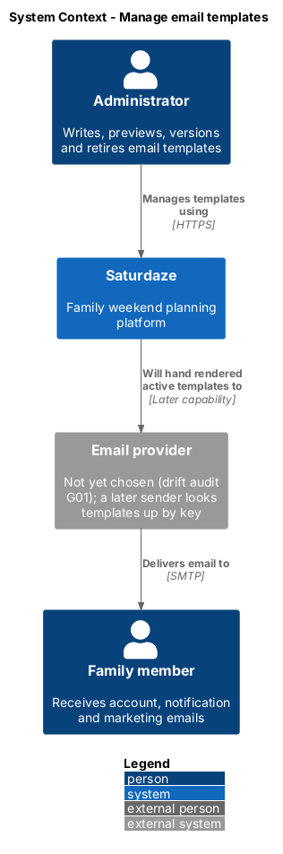
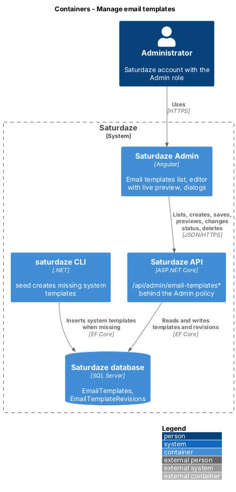
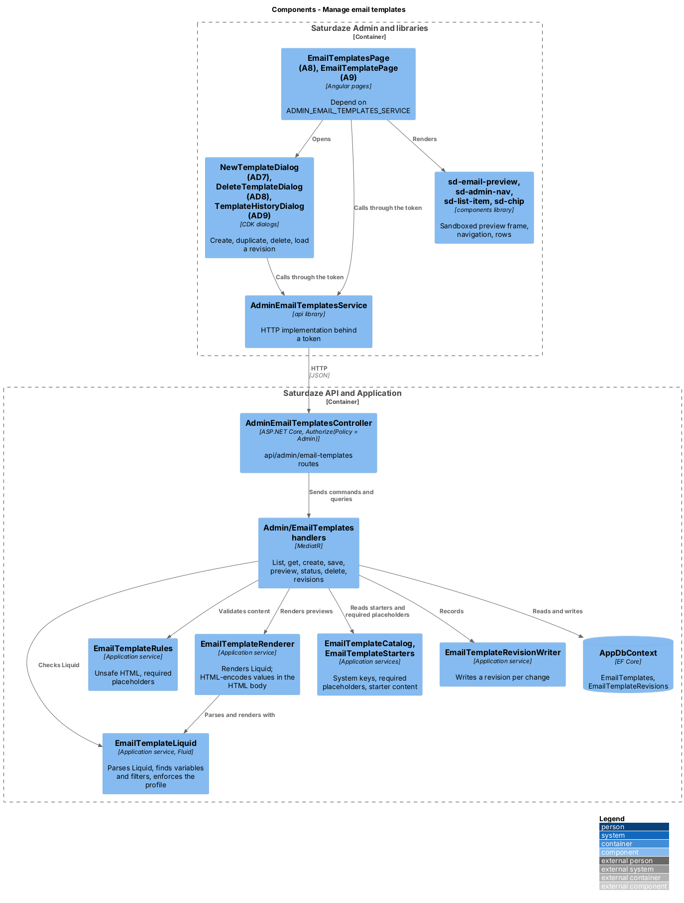
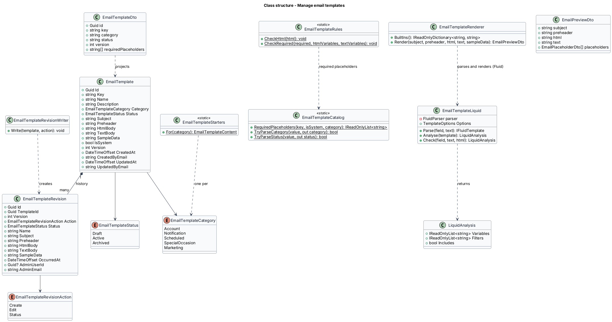
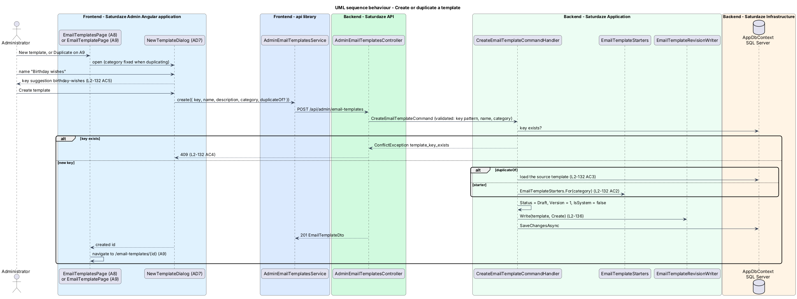
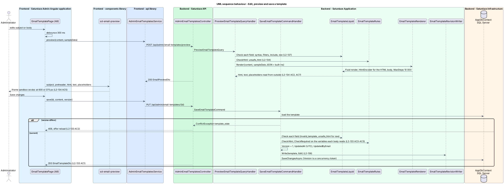
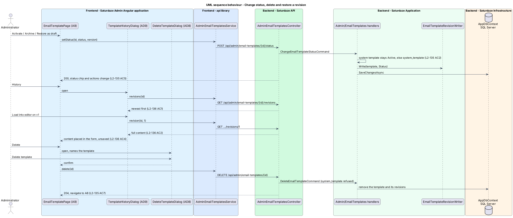

C4 views, data model, sequences, rules and traceability
Revised 2026-10-09: Liquid rendered with Fluid (ADR-017) · source of truth: docs/detailed-designs/administration/manage-email-templates/README.md
The API drafts verification and reset emails; their wording lives in no editable place, and no provider sends them (G01, video 18).
Administrators write, preview, version and retire templates in Saturdaze Admin.
A sender looks an Active template up by its key.
| Term | Meaning |
|---|---|
| email template | Subject, preheader, HTML body and plain-text body |
| key | Unique, immutable: account.password-reset |
| category | Account · Notification · Scheduled · SpecialOccasion · Marketing; fixed at creation |
| status | Draft · Active · Archived |
| placeholder | Top-level Liquid variable read from outside, e.g. recipientName |
| sample data | JSON object of placeholder values for the preview |
| built-ins | appName appUrl recipientName recipientEmail unsubscribeUrl currentYear |
| system template | account.verify-email, account.password-reset |
| revision | Immutable snapshot on every create, save and status change |
Sending · scheduling · audience selection · unsubscribe handling · localisation
Templates hold content, not recipients; the preview renders sample values only.



Route under /api/admin/email-templates | Handler |
|---|---|
GET ?q=&category=&status= | ListEmailTemplatesQueryHandler |
GET /{id} | GetEmailTemplateQueryHandler |
POST | CreateEmailTemplateCommandHandler |
PUT /{id} | SaveEmailTemplateCommandHandler |
POST /preview | PreviewEmailTemplateQueryHandler |
POST /{id}/status | ChangeEmailTemplateStatusCommandHandler |
DELETE /{id} | DeleteEmailTemplateCommandHandler |
GET /{id}/revisions | ListEmailTemplateRevisionsQueryHandler |
GET /{id}/revisions/{version} | GetEmailTemplateRevisionQueryHandler |
AdminEmailTemplatesController · [Authorize(Policy = "Admin")] · handlers in Saturdaze.Application/Admin/EmailTemplates/

AddEmailTemplatesKey(Category, Status)nvarchar(max), validated to 100 000 and 50 000 characters(TemplateId, Version)EmailTemplateSeeder (Saturdaze.Cli/Seed, email-templates.json): inserts a missing system template as Active, version 1, with a version 1 revision

Validated first: key pattern, name, category (400 naming the field)
409 template_key_exists
duplicateOf or EmailTemplateStarters.For(category)Draft, version 1, IsSystem = falseWrite(template, Create), one SaveChangesAsyncEmailTemplateDto → the editor opens
PUT /api/admin/email-templates/{id} with the content and the version the editor loaded
409 template_stale; the editor says someone else changed the template and offers to reload
CheckRequiredVersion + 1, UpdatedAt (UTC), UpdatedByEmailWrite(template, Edit), one SaveChangesAsyncVersion is the EF Core concurrency token: EmailTemplateConcurrency turns a lost race into template_stale

GET …/{id}/revisions newest first · GET …/{id}/revisions/{version} full content · History dialog (AD9)
DELETE /api/admin/email-templates/{id} → 204, back to A8system_templateWidely known (Shopify, Jekyll, many email platforms), designed for untrusted authors, and plain {{name}} placeholders are already valid Liquid.
{{ name }} outputs a value{% if %} and {% for %}: conditions and loopsupcase or dateFluid.Core, pinned in Directory.Packages.props (ADR-004) · docs/adr/ADR-017-liquid-email-templates.md
| Rule | Refused example | Code |
|---|---|---|
| Standard tags and Fluid's standard filters | {{ note | shout }} | invalid_template |
No include or render | {% include 'footer' %} | invalid_template |
No raw in the HTML body | {{ note | raw }} | unsafe_html |
| At most 10 000 steps | {% for i in (1..100000) %}{{ i }}{% endfor %} | invalid_template |
| Field, line and column named | Hi {{ first name }} | invalid_template |
| Sample data: JSON object, at most 100 names, 20 000 characters | Any other shape | 400 on sampleData |
<script> <iframe> <object> <embed> <form> <base>on…= attributesjavascript: vbscript: data:text/htmlEmailTemplateRules
HTML body rendered with HtmlEncoder.Default; subject, preheader and text body with NullEncoder
<iframe sandbox>allow-scriptsallow-same-origin| Template | Must use |
|---|---|
account.verify-email | verificationLink |
account.password-reset | resetLink |
| Every Marketing template | unsubscribeUrl |
Found by walking the parsed template, so {{ resetLink | escape }} counts · either body without it → 400 missing_placeholder
| Code | Status | When |
|---|---|---|
template_key_exists | 409 | Create with a key that exists |
template_stale | 409 | Save or status change with an old version |
invalid_template | 400 | Liquid syntax, unknown filter, include/render, too many steps |
unsafe_html | 400 | Deny-listed HTML, or raw in the HTML body |
missing_placeholder | 400 | A required variable no longer used |
system_template | 400 | Any status but Active, or delete, on a system template |
| L2 | Also refines | Covers |
|---|---|---|
L2-130 | L1-017 CLI | Store templates, seed the system templates |
L2-131 | L1-011 responsive | List and find (A8) |
L2-132 | — | Create and duplicate (AD7) |
L2-133 | L1-012 security | Edit safely (A9) |
L2-134 | L1-012, L1-014 accessibility | Preview with sample data |
L2-135 | — | Activate, archive, restore, delete (AD8) |
L2-136 | L1-015 observability | Revision history (AD9) |
L2-137 | L1-012 security | Write templates in Liquid |
Version is the concurrency token: stale means template_stale.L1-038 in docs/specs/L1.md · L2-130 to L2-137 in docs/specs/L2.mdVideo 25 shows the earlier placeholder syntax; ADR-017 says it should be re-recorded.